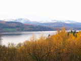
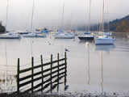
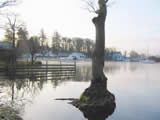
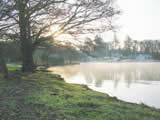
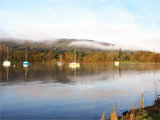
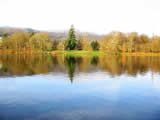
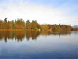
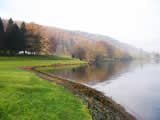
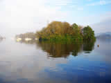

Lake Windermere.
Those visitors arriving on a warm summers day (or even a wet one) and having negotiated the last mile or so of heavy traffic moving slowly past pavements thronged with pedestrians, will be in no doubt that they have arrived at probably the most visited lake of the area.
Lake Windermere, at 12 miles long and 220 feet deep, is a magnet to thousands who come to enjoy the facilities of this, England’s largest lake.
One particular attraction are the cruises from the bustling Bowness Bay by launches and steamers calling at Waterhead in Ambleside, Lakeside and Brockhole Park. Many will stroll along Cockshott Point; a path leading from Bowness promenade to the cross-lake ferry at Ferry Nab. The 10 minute crossing to Sawrey is the gateway to Claife Heights, and beyond, the home of Beatrix Potter.
The lake is overlooked by imposing hotels, some of which have been converted from large residences built by the wealthy of the business world in the 19 th C. Additionally, many smaller establishments offering high levels of comfort and hospitality are nearby.
En-route by ferry from the shops, cafes, restaurants and pubs of Bowness to the aquarium at Lakeside, the Haverthwaite Railway and the remains of the Roman Fort at Waterhead, passengers will be treated to a spectacular scenic journey of the hills, mountains and wooded slopes surrounding the lake.
Summer shows, exhibitions, museums, gardens, amusement arcades, and, last but not least, the hospitality and scenery, combine to make this location the complete package of facilities, summer, or winter, for young and old.
Road access is via the A591/592 from Keswick and Penrith in the north, and Kendal and Newby Bridge in the south.
It is well served by bus from the surrounding towns and villages, and Windermere is the nearest railway station.
Click on the photographs for a larger image.
All images open in a new window.
All images are 800x 600 resolution and may take a long time to download on slower internet connections.
For larger images (1024x768), please visit our
computer wallpapers section.
  
  
  